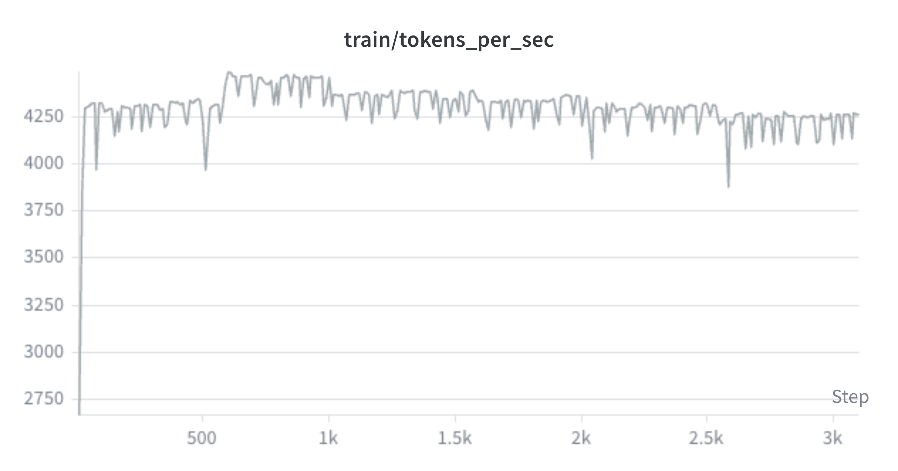
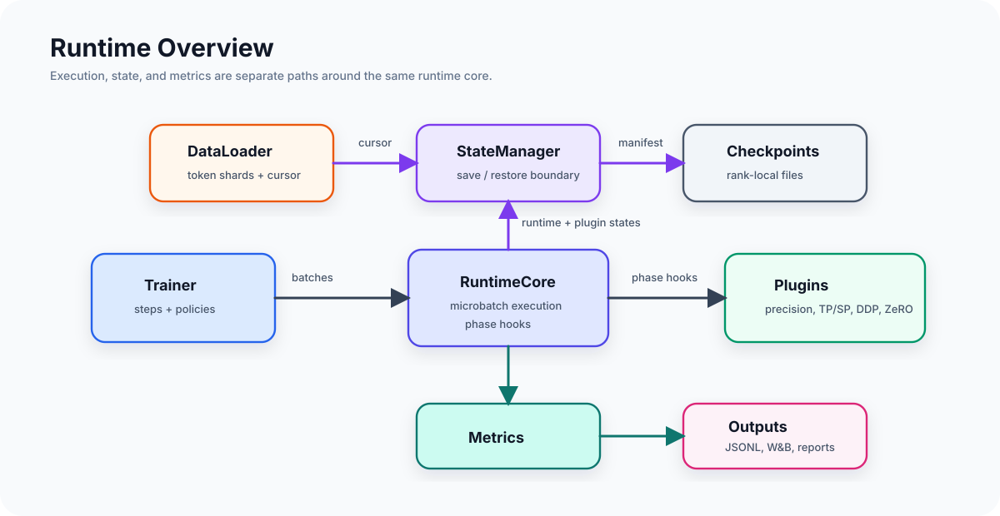
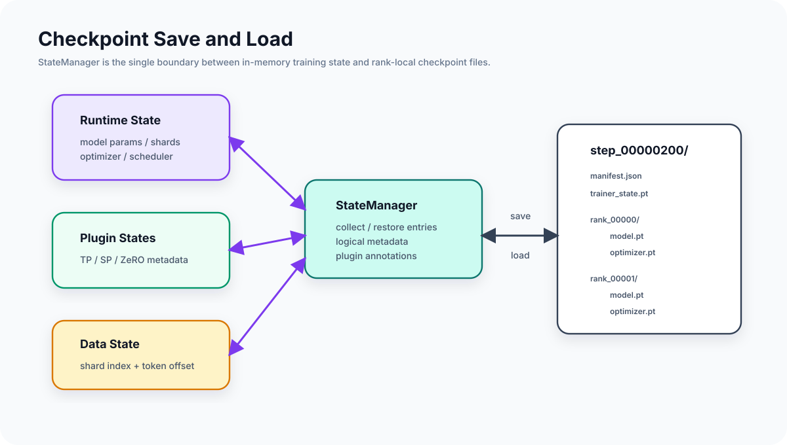
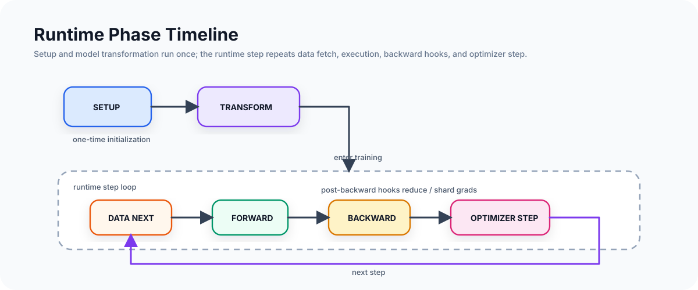

A Small but Realistic Runtime for LLM Pretraining
RuntimeCore, plugin ordering, TP/SP, DDP, ZeRO, checkpointing, dataloader resume, metrics, and 4-GPU training evidence.
Read articlePretraining infrastructure notes
Notes on building a compact but realistic training stack: runtime phases, composable parallel plugins, sharded checkpoints, token-stream resume, profiler traces, and the path from pretraining to post-training services.

Deep dives written from the perspective of implementing and debugging the runtime, not wrapping PyTorch in a large framework.

RuntimeCore, plugin ordering, TP/SP, DDP, ZeRO, checkpointing, dataloader resume, metrics, and 4-GPU training evidence.
Read article
Logical tensors, local shards, optimizer source ranks, atomic saves, retention, and resume correctness beyond model weights.
Roadmap
Rank-local CPU/CUDA/NCCL traces for understanding compute, communication, launch gaps, and small-model underutilization.
RoadmapThe blog is organized around concrete infrastructure boundaries that show up in real pretraining and post-training systems.
Phase hooks, plugin ordering, optimizer ownership, precision, grad clipping, and training-loop boundaries.
TP, SP, DDP, ZeRO stages, and the planned path toward PP, CP, and expert parallelism.
Rank-local checkpoint artifacts, manifests, dataloader cursors, RNG, and resume validation.
Run specs, manifests, profiler traces, artifact stores, SFT, preference tuning, and RL control planes.
Real run evidence
The experiments are intentionally compact, but exercise the same state boundaries used by larger training systems: sharded parameters, optimizer ownership, token-stream resume, and distributed metrics.